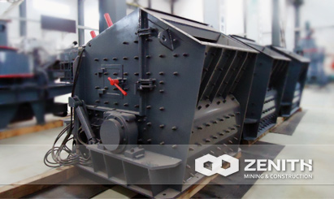
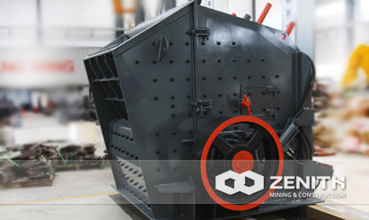
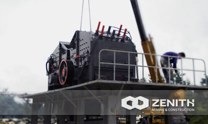
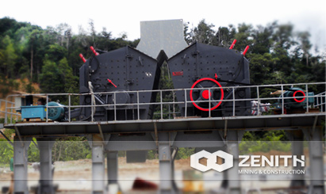

- 
- 
- 
- 
PFW Impact Crusher
During the process of mining, impact crusher often offer unbeatable performances in the secondary or tertiary crushing. Zenith's PFW series impact crusher also can be widely used in the recycling application. Modern mining industry calls for crushers with high crushing ratio. However, Zenith's PFW series impact crushers can meet this particular requirement.
PFW impact crusher features heavy duty rotor design, unique hammer locking system, interchangeable wearing parts and easy maintenance.
Widely Application of PEW Jaw Crusher
PFW impact crusher is also called European style impact crusher, often used in the secondary crushing and fine crushing. It is very suitable for open-pit crushing in quarries. This series impact crushers provide customers low cost solutions, outstanding performance, good cubical shape, lowest operation cost per ton, and wide materials applications. Nowadays, PFW Series impact crushers produced by Zenith are widely used in the building, cosmetics, paper, plastic, lacquer, toothpaste, and pigment industries, etc.
Working Principle of PFW Impact Crusher
This type of impact crusher deals with materials through the impact force. When the materials enter the cavity, they are crushed by the high-speed impact of the blow bar. So they are thrown into the impact plates on the rotor for secondary crushing. Then the materials will be shot back to the blow bar again for the third crushing. This process repeats until the materials are crushed to the required size and discharged from the lower part of the machine. The size and shape of the finished powder can be changed by adjusting the gap between the impact rack and rotor support.
The machine employs self-weight security device in its back frame. When other objects enter the impact cavity, they will be forced out of the machine by the impact rack in the front and back of the machine.
PFW impact crusher Benefits and advantages
- Heavy rotor design and tight test method improve the rotor performance.
- Advanced Manufacture process and high-end fabrication material.
- Overall type cast steel structure bearing base improves anti load resistance capacity.
- Hydraulic jacking device and hydraulic regulated discharging port is helpful to save labor and time.
The tacnology data
Two-curtain cavity hydraulic impact crusher:| Model | Rotor Φ×L (mm) | Feed Opening (mm) | Max Feeding (mm) | Capacity (t/h) | Power (kw) | Motor Model | Machine Size (mm) |
|---|---|---|---|---|---|---|---|
| PFW1214II | Ф1150×1400 | 1100×1430 | 500 | 130-200 | 4-132 | Y315M-4/132 | 2400×2310×2550 |
| PFW1315II | Ф1300×1500 | 1200×1530 | 600 | 180-320 | 4-160 | Y315L1-4/160 | 2700×2570×2800 |
| PFW1318II | Ф1300×1800 | 1200×1830 | 700 | 240-400 | 4-200 | Y315L2-4/200 | 2700×2870×2800 |
| PFW1415II | Ф1400×1500 | 1450×1530 | 800 | 240-450 | 4-200 | Y315L2-4/200 | 3000×2700×3070 |
| Model | Rotor Φ×L (mm) | Feed Opening (mm) | Max Feeding (mm) | Capacity (t/h) | Power (kw) | Motor Model | Machine Size (mm) |
| PFW1214Ⅲ | Ф1150×1400 | 570×1430 | 250 | 90-170 | 4-132 | Y315M-4/132 | 2550×2310×2100 |
| PFW1315Ⅲ | Ф1300×1500 | 625×1530 | 300 | 180-270 | 4-160 | Y315L1-4/160 | 2960×2570×2380 |
| PFW1318Ⅲ | Ф1300×1800 | 625×1830 | 300 | 220-300 | 4-200 | Y315L2-4/200 | 2960×2870×2380 |
| PFW1415Ⅲ | Ф1400×1500 | 800×1530 | 350 | 280-350 | 4-200 | Y315L2-4/200 | 3120×2650×2660 |